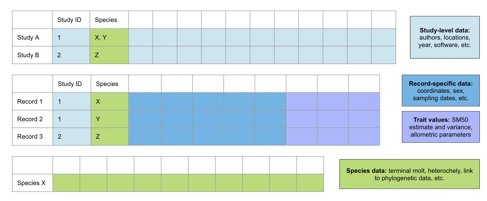

| S | Sample | Crustacean species |
| PI | Phenomenon of Interest | Identifying size at sexual maturity based on changes in a morphometric relationship (e.g., the ratio between carapace width and claw height) |
| D | Design | Measured at least two morphological features, then used a computational/algorithmic approach to estimate size at morphometric maturity |
| E | Evaluation | A numerical estimate of SM50 or conclusion about the utility of morphometric analysis for determining size at maturity |
| R | Research Type | Quantitative |
4 Systematic Review
4.1 Introduction
The foundation of my dissertation will be a systematic literature review to identify all modeling approaches used to estimate crustacean size at maturity using morphometric data. Special focus will be placed on understanding the methodologies of studies that have investigated regional/spatial variation in size at maturity. I will aim to follow current best practices for ensuring transparency and reproducibility in ecological systematic reviews and meta-analyses (Foo et al. 2021; O’Dea et al. 2021; Kambouris et al. 2024; Gates 2002; Koricheva, Gurevitch, and Mengersen 2013).
Synthesis research plays a crucial role in accelerating ecological knowledge by integrating evidence and organizing information in a way that can answer foundational, large-scale questions (Halpern et al. 2020; Spake et al. 2022). The combined analysis of disparate data sources, theories, and tools is a powerful tool for advancing scientific understanding, and represents a powerful approach to informing evidence-based management decisions in the face of rapid environmental change (Halpern et al. 2020; Koricheva, Gurevitch, and Mengersen 2013). The results from qualitative and, where possible, quantitative/meta-analytical methods applied to a novel database of size at maturity studies will be invaluable for preventing the remainder of my graduate work from duplicating existing efforts and maximizing the scientific value of my research output. Additionally, given the relative impact of synthesis papers compared to non-synthesis papers, publishing a rigorous systematic review will be highly beneficial for establishing my presence as a promising researcher within the fisheries science community.
4.2 Completed work
4.2.1 Formulate initial question and identify inclusion/exclusion criteria
Overarching question: What methods have previously been used to model crustacean size at maturity based on morphometric data, and in what contexts have they been applied?
Since the focus of this review does not fit well into the PICO framework, I have used the SPIDER framework to organize the key components of the research question (Methley et al. 2014) (Table 4.1).
Exclusion criteria:
- Studies that did not attempt to estimate size at maturity or identify maturity-related changes in allometric growth
- Studies that used existing size cutoffs (e.g., 30mm CW) or discriminant functions for classification
- Studies that only estimate size at gonadal/sexual maturity (no morphometric ratios considered)
- Studies that focused on a non-crustacean species
- Studies written in a language other than English
4.2.2 Execute search
To identify the most appropriate citation databases to use for this review, I consulted several studies comparing the academic search systems commonly used for evidence synthesis (Visser, Eck, and Waltman 2021; Haddaway et al. 2015; Martín-Martín et al. 2021; Gusenbauer 2019; Gusenbauer and Haddaway 2020). Based on the overlap between the databases recommended for use by these studies and the databases to which I have institutional access, I decided to use Scopus, JSTOR, and ProQuest. Although the merits of Google Scholar as a tool for systematic reviews may be somewhat contentious (Boeker, Vach, and Motschall 2013; Giustini and Boulos 2013), it contains many records that are not found in other databases and is a powerful tool to find grey literature and increase the coverage of multi-database searches (Haddaway et al. 2015; Gusenbauer 2019; Martín-Martín et al. 2021). I only included the first 500 results out of 686 returned from Google Scholar (the first 25 pages). This is beyond the threshold of 50-100 results included by many systematic reviewers (Haddaway et al. 2015), and results beyond that appeared to have low relevance to the focal question. I also searched the NOAA Institutional Repository, another excellent source of grey literature, and did preliminary searches of Github and Zenodo to identify code/software developed for size at maturity modeling. Additionally, many additional relevant sources were identified through snowball searching and while reading scientific articles and management documents (e.g., stock assessment reports) (Table 4.2).
| Database | # of results | Search field | Notes |
|---|---|---|---|
| JSTOR | 33 | Abstracts only | |
| Scopus | 332 | Abstract, title, keywords | |
| ProQuest | 49 | Anywhere but full text | ProQuest One Academic (includes ProQuest Central and ProQuest Dissertation & Theses Global. Chose source types: Conference Papers & Proceedings, Dissertations & Theses, Books, Encyclopedias & Reference Works, Reports, Scholarly Journals, Trade Journals, and Working Papers |
| Google Scholar | 500 | Title | Excluded results that were available only as citations |
| NOAA Institutional Repository | 392 | Everything | |
| Snowball & other | 139 | NA | Sources found in the reference list (backward snowballing) or citations (forward snowballing) of screened papers, or those identified in the process of doing background research or general reading for the project. |
Developing a formal search strategy is a key component of a systematic review (Foo et al. 2021). For Google Scholar, the search query used was: intitle:((“maturity” AND “size”) AND (“crab” OR “Crustacea” OR “Decapoda” OR “Brachyura”)). The query used for all other databases was: (morpho* AND “maturity” AND “size”) AND (“crab” OR “Crustacea” OR “Decapoda” OR “Brachyura”). The search string was tested with a preliminary Scopus search to ensure that it could find two articles that were highly relevant to the project: Olsen and Stevens (2020) and Lawrence et al. (2021).
Duplicates were first removed using the duplicate merging feature in the reference manager software Zotero. A second round of duplicate screening was conducted using the online systematic review software Rayyan, which was then used for the initial screening of titles and abstracts. In some cases, the full text was briefly skimmed to resolve uncertainties about whether the study should be included that resulted from absent or ambiguous descriptions in the abstract of the method of determining size at maturity. The primary reason for exclusion was that the study determined physiological or functional maturity rather than morphometric maturity (Waiho et al. 2017). Another common category of excluded studies were those using morphometric analysis for a purpose other than determining size at maturity, such as to distinguish two species, compare populations within a species, or identify the biological effects of an external variable like temperature or predation. At least 70 studies were focused on the general morphology and/or size at maturity of a non-crustacean organism, particularly skates, rays, and marine snails.
4.3 Data extraction
Building a well-designed database is a fundamental component of a comparative analysis of ecological data and allows the data to be reused and expanded in support of future scientific inquiry (Schwanz et al. 2022).
My database will include three main data tables for extracted data (Figure 4.1) alongside three supporting tables with important metadata. One will be in “wide” format with one row for each paper/source. The Parameters and Species tables will be in long/stacked format, with one row for each relevant grouping included in a source.

Attributes (variables) that will be recorded in the tables corresponding to Figure 4.1 are provided in Appendix B in EML format, while supporting tables are in Appendix C. The first supporting table contains factor codes in accordance with the EML schema. The second supporting table contains standardized descriptions of each measured body part to mitigate confusion resulting from the usage of general terms like “claw height”. Similarly, a third table contains standardized descriptions of each modeling approach to mitigate confusion resulting from the usage of general terms like “piecewise regression”.
Additional information regarding the storage and accessibility of these data is available in Appendix A.
4.4 Publication bias
In any systematic review, it is necessary to investigate potential bias in the studies included in the review. I will use appropriate graphical and statistical tests (e.g., funnel plots) to identify the existence of publication bias and assess the impact of publication bias on the results of the review (Nakagawa and Santos 2012; Nakagawa et al. 2022). Where possible, cumulative meta-analysis will be used to test for possible time-lag bias (Nakagawa et al. 2022). I will also discuss potential bias associated with the literature search and extraction processes (Koricheva, Gurevitch, and Mengersen 2013; Gates 2002).
4.5 Data analysis
Author information will be used to visualize citation and co-authorship networks for all included studies and examine network structure through metrics such as degree centrality (the number of edges for each node). Sampling dates and year of publication will be used to establish a timeline of key developments in this area and describe how methods of estimating SM50 using morphometric data have changed over time.
Most factor variables will be summarized by calculating the proportion of included studies for which the variable was coded TRUE: for example, if the study also recorded physiological maturity, if the study included a measure of variance for their SM50 estimate, or if the study mentioned excluding individuals with regenerating chelae.
More complex meta-analytical models will be fit as Bayesian multilevel mixed models, likely using brms with packages like tidybayes, ggdist, bayestestR or bayesplot for visualizing posterior distributions, trace plots, and other relevant graphics. These models will include phylogenetic correlation matrices and can account for non-independence when multiple effect sizes are obtained from the same study. Where sufficient phylogenetic data are available, I will employ the powerful multilevel comparative meta-analysis approach described by Pottier et al. (2024).
References
Boeker, Martin, Werner Vach, and Edith Motschall. 2013. “Google Scholar as Replacement for Systematic Literature Searches: Good Relative Recall and Precision Are Not Enough.” BMC Medical Research Methodology 13 (October): 131. https://doi.org/10.1186/1471-2288-13-131.
Foo, Yong Zhi, Rose E. O’Dea, Julia Koricheva, Shinichi Nakagawa, and Malgorzata Lagisz. 2021. “A Practical Guide to Question Formation, Systematic Searching and Study Screening for Literature Reviews in Ecology and Evolution.” Methods in Ecology and Evolution 12 (9): 1705–20. https://doi.org/10.1111/2041-210X.13654.
Gates, Simon. 2002. “Review of Methodology of Quantitative Reviews Using Meta-Analysis in Ecology.” Journal of Animal Ecology 71 (4): 547–57. https://doi.org/10.1046/j.1365-2656.2002.00634.x.
Giustini, Dean, and Maged N. Kamel Boulos. 2013. “Google Scholar Is Not Enough to Be Used Alone for Systematic Reviews.” Online Journal of Public Health Informatics 5 (2): 214. https://doi.org/2013.
Gusenbauer, Michael. 2019. “Google Scholar to Overshadow Them All? Comparing the Sizes of 12 Academic Search Engines and Bibliographic Databases.” Scientometrics 118 (1): 177–214. https://doi.org/10.1007/s11192-018-2958-5.
Gusenbauer, Michael, and Neal R. Haddaway. 2020. “Which Academic Search Systems Are Suitable for Systematic Reviews or Meta-Analyses? Evaluating Retrieval Qualities of Google Scholar, PubMed, and 26 Other Resources.” Research Synthesis Methods 11 (2): 181–217. https://doi.org/10.1002/jrsm.1378.
Haddaway, Neal Robert, Alexandra Mary Collins, Deborah Coughlin, and Stuart Kirk. 2015. “The Role of Google Scholar in Evidence Reviews and Its Applicability to Grey Literature Searching.” PLOS ONE 10 (9): e0138237. https://doi.org/10.1371/journal.pone.0138237.
Halpern, Benjamin S, Eric Berlow, Rich Williams, Elizabeth T Borer, Frank W Davis, Andy Dobson, Brian J Enquist, et al. 2020. “Ecological Synthesis and Its Role in Advancing Knowledge.” BioScience 70 (11): 1005–14. https://doi.org/10.1093/biosci/biaa105.
Kambouris, Steven, David P. Wilkinson, Eden T. Smith, and Fiona Fidler. 2024. “Computationally Reproducing Results from Meta-Analyses in Ecology and Evolutionary Biology Using Shared Code and Data.” PLOS ONE 19 (3): e0300333. https://doi.org/10.1371/journal.pone.0300333.
Koricheva, Julia, Jessica Gurevitch, and Kerrie Mengersen. 2013. Handbook of Meta-Analysis in Ecology and Evolution. Princeton University Press. https://www.jstor.org/stable/j.ctt24hq6n.
Lawrence, Amanda, Bradley G. Stevens, Burton Shank, and Jum Sook Chung. 2021. “Morphometric and Physiological Maturity of Male Jonah Crab, Cancer Borealis Stimpson, 1859 (Decapoda: Brachyura: Cancridae), in Southern New England, USA.” Journal of Crustacean Biology 41 (3): ruab030. https://doi.org/10.1093/jcbiol/ruab030.
Martín-Martín, Alberto, Mike Thelwall, Enrique Orduna-Malea, and Emilio Delgado López-Cózar. 2021. “Google Scholar, Microsoft Academic, Scopus, Dimensions, Web of Science, and OpenCitations’ COCI: A Multidisciplinary Comparison of Coverage via Citations.” Scientometrics 126 (1): 871–906. https://doi.org/10.1007/s11192-020-03690-4.
Methley, Abigail M., Stephen Campbell, Carolyn Chew-Graham, Rosalind McNally, and Sudeh Cheraghi-Sohi. 2014. “PICO, PICOS and SPIDER: A Comparison Study of Specificity and Sensitivity in Three Search Tools for Qualitative Systematic Reviews.” BMC Health Services Research 14 (1): 579. https://doi.org/10.1186/s12913-014-0579-0.
Nakagawa, Shinichi, Malgorzata Lagisz, Michael D. Jennions, Julia Koricheva, Daniel W. A. Noble, Timothy H. Parker, Alfredo Sánchez-Tójar, Yefeng Yang, and Rose E. O’Dea. 2022. “Methods for Testing Publication Bias in Ecological and Evolutionary Meta-Analyses.” Methods in Ecology and Evolution 13 (1): 4–21. https://doi.org/10.1111/2041-210X.13724.
Nakagawa, Shinichi, and Eduardo S. A. Santos. 2012. “Methodological Issues and Advances in Biological Meta-Analysis.” Evolutionary Ecology 26 (5): 1253–74. https://doi.org/10.1007/s10682-012-9555-5.
O’Dea, Rose E., Malgorzata Lagisz, Michael D. Jennions, Julia Koricheva, Daniel W. A. Noble, Timothy H. Parker, Jessica Gurevitch, et al. 2021. “Preferred Reporting Items for Systematic Reviews and Meta-Analyses in Ecology and Evolutionary Biology: A PRISMA Extension.” Biological Reviews 96 (5): 1695–1722. https://doi.org/10.1111/brv.12721.
Olsen, Noelle A., and Bradley G. Stevens. 2020. “Size at Maturity, Shell Conditions, and Morphometric Relationships of Male and Female Jonah Crabs in the Middle Atlantic Bight.” North American Journal of Fisheries Management 40 (6): 1472–85. https://doi.org/10.1002/nafm.10509.
Pottier, Patrice, Daniel W. A. Noble, Frank Seebacher, Nicholas C. Wu, Samantha Burke, Malgorzata Lagisz, Lisa E. Schwanz, Szymon M. Drobniak, and Shinichi Nakagawa. 2024. “New Horizons for Comparative Studies and Meta-Analyses.” Trends in Ecology & Evolution 39 (5): 435–45. https://doi.org/10.1016/j.tree.2023.12.004.
Schwanz, Lisa E., Alex Gunderson, Maider Iglesias-Carrasco, Michele A. Johnson, Jacinta D. Kong, Julia Riley, and Nicholas C. Wu. 2022. “Best Practices for Building and Curating Databases for Comparative Analyses.” Journal of Experimental Biology 225 (Suppl_1): jeb243295. https://doi.org/10.1242/jeb.243295.
Spake, Rebecca, Rose E. O’Dea, Shinichi Nakagawa, C. Patrick Doncaster, Masahiro Ryo, Corey T. Callaghan, and James M. Bullock. 2022. “Improving Quantitative Synthesis to Achieve Generality in Ecology.” Nature Ecology & Evolution 6 (12): 1818–28. https://doi.org/10.1038/s41559-022-01891-z.
Visser, Martijn, Nees Jan van Eck, and Ludo Waltman. 2021. “Large-Scale Comparison of Bibliographic Data Sources: Scopus, Web of Science, Dimensions, Crossref, and Microsoft Academic.” Quantitative Science Studies 2 (1): 20–41. https://doi.org/10.1162/qss_a_00112.
Waiho, Khor, Hanafiah Fazhan, Juliana C. Baylon, Hashim Madihah, Shaibani Noorbaiduri, Hongyu Ma, and Mhd Ikhwanuddin. 2017. “On Types of Sexual Maturity in Brachyurans, with Special Reference to Size at the Onset of Sexual Maturity.” Journal of Shellfish Research 36 (3): 807839. https://doi.org/10.2983/035.036.0330.